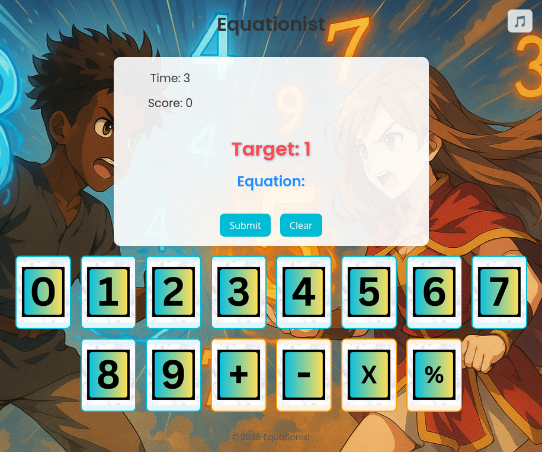
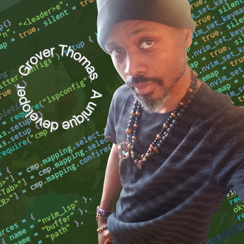
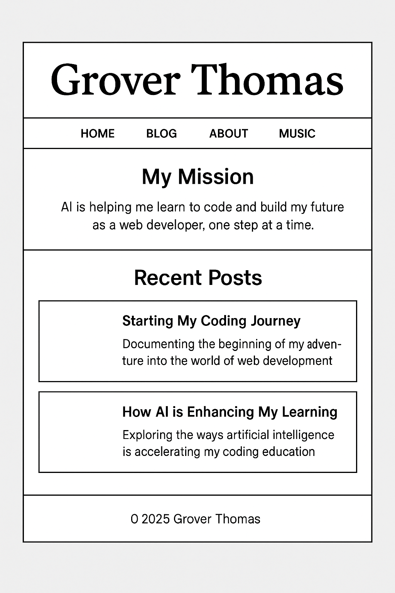
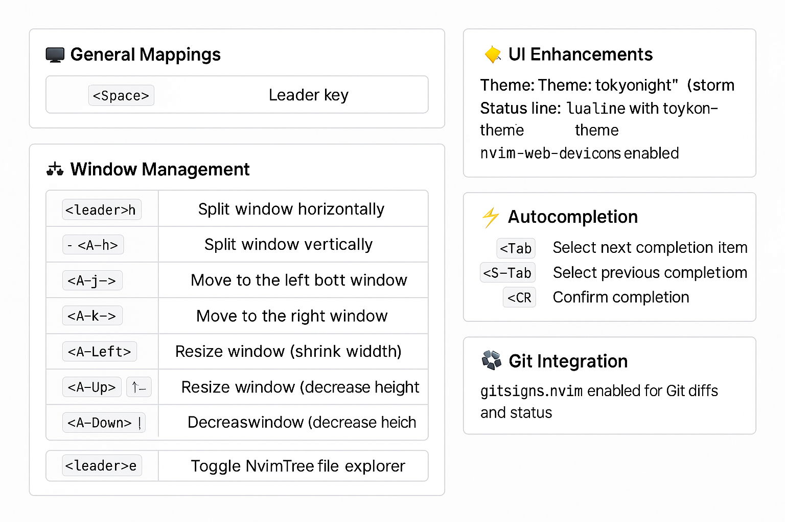

Documenting my coding, parenting, and music journey
Week 4: Code, Beats, and Tech Vibes (Blog 4)
These past two weeks have been a deep dive into the heart of coding. I’ve been studying JavaScript fundamentals and even slipped into a bit of Python, which has opened up another layer of creative possibilities on my journey. Sitting down for a long, honest talk with myself about my passions reminded me that technology isn’t just a tool. For me, it’s ALWAYS been a way of life. Another way of expresing myself. Every keystroke adds to a clearer vision of where I can go.
Curating electronic press kits for both old friends and new connections has been nothing short of electrifying. It’s like handing someone a sleek, digital passport that captures their essence and ambition. The feeling of working hard, being consistent in my studies, and slowly mastering code is exhilarating. It’s the proof that persistence pays off.
As I create more, I’m rediscovering my love for both the hardware and software sides of tech. Years of helping friends build or dismantle computers, wiping and rebooting servers, and dashing off-call like a tech superhero have all prepared me for this moment. That rush, answering a frantic call when the internet goes down, reminds me that problem solving and innovation are at the very core of what I do.
Every day now, I spend time on coding exercises with my ever-patient AI tutor, exploring projects on GitHub, and soaking up freeCodeCamp wisdom. All while avoiding the quicksand of tutorial hell. This balanced mix of challenge and creativity is what fuels my passion for building something new when others see nothing.
Here’s a fun breakdown of the core codes driving my projects:
HTML: It’s like the blueprint of a house (Seeee...easyyy) a simple structure that holds everything together.
CSS: Think of it as the Interior Designer with no budget, adding the exact amount of drip and style to the raw framework by packaging it with personality.
Flexbox: This is the ultimate dance floor for page elements, arranging them smoothly so every piece grooves into place.
JavaScript: The lively MC of the party, bringing interactivity and energy, making sure everything pops and performs.
Python: "The Smooooth Operator that’s versatile and friendly, ready to organize chaos or add an unexpected spark to the mix.
Together, they’re like a band where each instrument plays its part to create a digital symphony.
I’m currently juggling my second game project alongside building EPKs, and yes, I’m also prepping for a DJ event at the end of the month! It’s an intense mix of creation, connection, and pure passion. The mantra is simple: stay focused, keep moving forward, and don’t ever stop honing your craft.
Whether it’s coding deep into the night, assembling digital masterpieces that speak volumes, or taking on the role of tech superhero, I’m learning that the journey is where the magic happens. Enjoy your life, elevate yourself, and remember every step forward is one more beat in the song of your progress.
Coding, curating, and turning up the beats—this journey is all about progress and passion.
Week 3: Training with AI, EPK Flow (Blog 3)
Week 3 was here, and the groove is getting smoother. I’ve been training myself how to code using AI as my daily tutor and it’s honestly going great. The more questions I ask, the more it recalls past notes on syntax, structure, and logic. It’s like having a personalized mentor who never sleeps. A true assistant, always ready to break things down or help me build them up.
This week, I started building another game alongside my math card project and had a realization: I *really* enjoy brain games. Solving logic problems, designing challenges, and turning them into playable experiences just clicks for me. I might even lean fully into that direction down the line. Who knows? Game development could be the next frontier. For now, these projects are sharpening my skills and giving me a clear creative lane.
Outside of game experiments, I’m still taking on freelance work. Right now, I’m building:
Electronic press kits for artists who need a clean, bold online presence
Launch and landing pages for small businesses with big goals
Portfolios that help people showcase their work confidently
Mini browser games as fun, functional proofs of concept
It feels good to get paid while getting better.
I’m realizing this whole journey is less about mastering everything at once and more about building momentum. Bit by bit, I’m learning how to structure sites, fix bugs, and design layouts that actually work on real screens. Every project sharpens something.
AI helps me learn. Games help me create. Code helps me connect.
Time management is still key. I’m balancing coding, music, parenting, and rest the best I can. It’s not perfect, but it’s real. I track hours, write about what I learn, and try to stay open to the process.
The math game continues to grow with rounds, improved layout, and a new menu in the works. But it’s also becoming a launchpad,an example of how I can follow an idea from sketch to screen.
Blog 3 marks a turning point. I’m not just learning to code anymore, I’m starting to enjoy the work, shape my interests, and see where this could lead.
Week 2: Building Momentum (Blog 2)
Week 2 is underway, and I can feel things picking up speed. What started as a weekend project is now turning into a full rhythm. I spent this week improving the Math Card Game refining how it plays, fixing small bugs, and making it look better across devices. It’s getting sharper every day.
I’m also getting more comfortable with Git and GitHub. Every night now, I commit my changes before I log off. It’s helping me review my work, spot patterns, and stay consistent.
Daily commits have become part of my workflow, like stretching before the real work begins.
Outside of personal projects, I’ve started picking up small gigs:
Electronic press kits for artists
Launch and landing pages for local businesses
It feels good to offer upgrades that make people feel proud of their brand again. Whether it's a DJ needing a sleek portfolio or a store wanting its first online presence code is helping me connect and create.
Honestly, HTML and CSS have been a game-changer. They’re why I can say “yes” when opportunity knocks. Knowing how to structure and style the web has let me hit the ground running.
It's not just knowing code it's knowing how to solve real problems.
As for JavaScript, the base I’ve built is strong enough to land real roles. But now it’s time to deepen it. This week and next are all about pushing toward:
Mastery of the fundamentals
Muscle memory through repetition
Becoming the grand master of my own flow
Code is a tool. Music is the message. Life is the practice.
I’m learning how to balance music, parenting, and progress. Some days are smooth, some are messy, but I’m showing up.
Tracking my hours, journaling my growth, and staying flexible have become part of the game.
The math game is growing too. I’ve added rounds, updated the layout, and started designing a main menu. I want kids to pick difficulty levels, themes, and game modes. It’s more than just a game, it’s proof that I can follow through.
Blog 2 is a checkpoint, not a finish line. Looking back even one week shows real movement.
Last week? I had a prototype. This week? I’m refining and expanding.
Every line of code is progress.
Music will always be my home base, but code is becoming my compass. And this blog? It’s the place where both can live together.
If you’re reading this, I hope it inspires you to blend your passions and build your rhythm.
We’re just getting started.
Weekend Project: Building a Game from Scratch (Blog 1.5)
This weekend was different. I wasn’t just learning, I was building. For almost 8 hours straight, I was locked in with my AI tutor, starting from an empty folder and ending with a fully playable prototype. No templates, no shortcuts. Just raw HTML, CSS, and JavaScript, all handwritten in Neovim. It was a crash course in frontend development, and it felt like leveling up in real time.
The goal was clear: make something small, make it playable, and make it mine. We landed on a Math Card Game. Simple in concept, but packed with learning. Designed for kids but useful for anyone wanting to sharpen mental math, the game asks players to click number and operator cards to solve fast-paced equations. You’ve got 30 seconds to get as many correct as you can, with bonus points for using multiple operators. After three rounds, the scores are tallied up. It’s fast, fun, and sneakily educational.

Building games, writing code, and leveling up one line at a time.
Every part of the game was hand-coded. The HTML structures the board, the cards, the timer, and the scoreboard. CSS handles the layout, spacing, animations, and responsive design. And JavaScript? That’s where the magic happens. It manages question generation, input tracking, round timers, scoring logic, sound feedback, and resets. For the first time, I wasn’t just copying code. I understood what each line did.
After finishing the game, I circled back to the blog itself, editing HTML and CSS directly to tweak the layout, update links, and keep the design clean and minimal. Every keystroke taught me something, and that’s what’s been the most powerful part of this journey so far. It’s not just the result, it’s how much I’ve grown by doing it myself.
A week ago, I was brushing up on basic syntax. Now I’m deploying projects. That shift didn’t happen by accident, it came from showing up every day, staying curious, and being willing to get a little uncomfortable. Progress doesn’t always feel like a leap. Sometimes it’s just one good weekend.
I’m doing this as a co-parent, music producer, and late bloomer to tech. If I can find time between work shifts, family life, and music sessions to build this, so can you. You don’t need to be a prodigy, you just need a plan, a little guidance, and the drive to keep going.
Week 2 officially starts Monday, but this little "blog 1.5" moment is proof that weekends can be powerful. Next up: polish the game, improve the layout, and start building out a full main menu and theme selector. Stay tuned and if you’re on your own journey, keep showing up.
Week 1: Why I’m Learning Web Development
This week, I officially began my journey into web development. But for me, it’s more than just picking up a new skill. It’s about rebuilding a life with intention. As a co-parent, music producer, and lifelong creative, I need a path that supports growth in all the areas that matter: flexibility, creative expression, and purpose.

Finding balance between music, code, and fatherhood — one day at a time.
Right now, I’m refreshing my understanding of HTML, CSS, and JavaScript. The core building blocks of websites. What’s wild is how much faster I’m moving now that I have a sense of direction. Every day I’m building smarter, making connections that used to feel random, and stacking real momentum. Up next: learning React to bring sites to life with interactive features, and diving into Python to start creating the logic and automation behind the scenes.
But this isn’t my first dance with tech. Back in the early 2000s, I was already getting into Linux as a teenager, trying to find the perfect “distro” (short for distribution. Like a flavor of the Linux operating system) that could run all my favorite music software. I was downloading and testing anything that played nice with Debian or Arch, pushing every plugin I could find just to see what I could make work.
That’s also how I first met the terminal...The black screen with white text where you type in commands to interact directly with your system. No mouse, no menus. Just pure control. For someone who grew up clicking on icons to open things, it can seem intimidating at first. But the terminal is actually a powerful conversation between you and your machine. You say exactly what you want, and it either listens or throws an error you’ll learn from.
By the time I was 16, I was using Linux for just about everything. I even started fixing other people’s computers on the side for a little extra cash. Looking back, all those hours spent editing config files, troubleshooting installs, and testing audio tools were training ground. I didn’t realize it then, but those skills with patience, problem solving, creative hacking are the same ones I’m using now as I become a developer.
Music has always been part of the story, too. Around 2004, I was constantly looking for ways to level up my sound using whatever tech I could get my hands on. Whether it was weird open-source audio software, DIY gear setups, or finding ways to run pro-level tools on older machines. I was always experimenting. I didn’t mind failing a hundred times if it meant getting one thing to finally work. That’s how innovation happens. That’s how creativity gets stronger.
Now, I’m looping everything I’ve learned back into the present. I’m choosing to code with clarity, produce with passion, and parent with presence. This blog is part dev journal, part life log, and part creative archive. I’m here to document not just the wins, but the unexpected lessons and quiet progress that happens when you commit to real change.
If you’re reading this and you’ve ever felt like it’s “too late” to start something new. I’m living proof that it’s not. I’m just getting started. Let’s build something from the ground up, together.

Finding balance between music, code, and fatherhood — one day at a time.
To shake things up, I decided to try something different: using AI as a tutor. Instead of just asking it to write code for me (which doesn’t help me learn), I use it to guide me. Kind of like having a personal coach. I’ll still read books, go through a giant Udemy course, and build projects I actually care about. But with AI, I get fast feedback, personalized help, and round-the-clock support.
After reading some Reddit threads about AI prompting, I figured I’d give it a shot. Now I get two homework assignments a day from AI. Usually small challenges that push me just enough. I block out time in my schedule, do the exercises, and track my progress. I can ask as many questions as I want without ever feeling rushed or judged. It’s not the same as having a real person next to you but if you’ve got patience and clear goals, AI can be a surprisingly helpful guide. So far, it’s working.
My goal isn’t to let AI do the work. It’s to help me grow faster and smarter. I’ve set an 8-month plan to land a development role, and that puts real fire in my soul. I love the challenge, and I know that the real magic happens when you master the fundamentals. That’s why I’m focusing on the basics deeply. So far, the exercises in HTML, CSS, and Flexbox have been great. The moment I saw HTML structure again, something clicked. It was like running into an old friend you hadn’t seen in years.

Finding balance between music, code, and fatherhood — one day at a time.
NeoVim:
My Coding Katana
My code editor OR as I like to call it, my weapon of choice is Neovim. For those who’ve never heard of it, Neovim is a modern reimagining of Vim, one of the oldest and most legendary text editors out there. Vim's been around since 1991 (yeah, it’s older than Google), and it's still going strong in 2025. Some folks even call it “the hacker’s editor” because it looks like you're coding inside the Matrix. But once you learn how to wield it, you realize just how powerful it really is.
Neovim takes that legacy and supercharges it by adding better plugins, smoother navigation, and more modern tools. I’m learning fast, and the more I use it, the more it feels like second nature. I’m finally starting to understand how file paths work on a deeper level, which makes working with folders and projects so much easier. Every time I move between files, create new components, or split my screen with a few key strokes, it feels like I just leveled up.
To some people, it might look like I’m just typing into a black box but truuuuuuust meeehehe, behind the scenes, there’s a creative rhythm to it. Neovim isn’t just an editor; it’s a mindset. Minimal, fast, and endlessly customizable—just like the journey I’m on.
So whether I’m building a layout in HTML, adding some Flexbox magic with CSS, or testing out a new React component soon. I’m doing it all inside Neovim, powered by muscle memory, curiosity, and a whole lot of ctrl-keys. It’s become my daily dojo, and I’m grateful for every “ah-ha” moment it gives me.
If you’re reading this and you’ve ever felt like it’s “too late” to start something new. I’m living proof that it’s not. I’m just getting started. Let’s build something from the ground up, together.